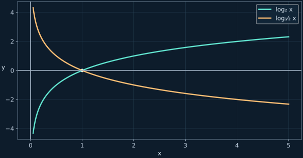

Степени, логарифмы и показательные уравнения
Смысл логарифма, смена основания и подробные вычисления с проверкой ограничений.
← Все конспектыИсточники и границы записи
Видео 28 октября 17:42, примерно 19:00–73:45. Содержанию соответствует SRT, названный 27 октября. В местах исправлений на доске разобран окончательный математически корректный вариант.
1. Общая основа степени
При положительном основании можно складывать показатели при умножении, вычитать при делении и перемножать при возведении степени в степень. Скобки в показателе принципиальны.
Пример с корнями в показателе
2. Что спрашивает логарифм
Логарифм — показатель степени: в какую степень нужно возвести a, чтобы получить b? Основание строго положительно и не равно 1; аргумент строго положителен. Ответ логарифма может быть отрицательным.

3. Три правила преобразования
Сложение превращается в произведение
Коэффициент сначала становится показателем
4. Смена основания
Записать через основание 2
Произведение разных логарифмов
5. Степень и логарифм взаимно отменяются
Пример занятия
6. Выразить через a и b
Известен один логарифм
Известны два логарифма
7. Логарифмические уравнения
Неизвестное основание
Основание зависит от x
Квадратное выражение в основании
8. Показательное уравнение: сравнение показателей
Функция aˣ при a>0, a≠1 строго монотонна и потому принимает каждое значение не более одного раза. Именно это позволяет приравнять показатели у степеней с одинаковым основанием.
9 и 27 приводим к основанию 3
9. Замена t=3ˣ и исправление записи
9ˣ⁺¹+3²ˣ⁺⁴=7290
Теперь попробуй самостоятельно
Дополнительные задачи находятся только во вкладке «Тренировка»: по 10 на каждый тип, с раскрываемыми ответами и разбором.
Открыть тренировку →